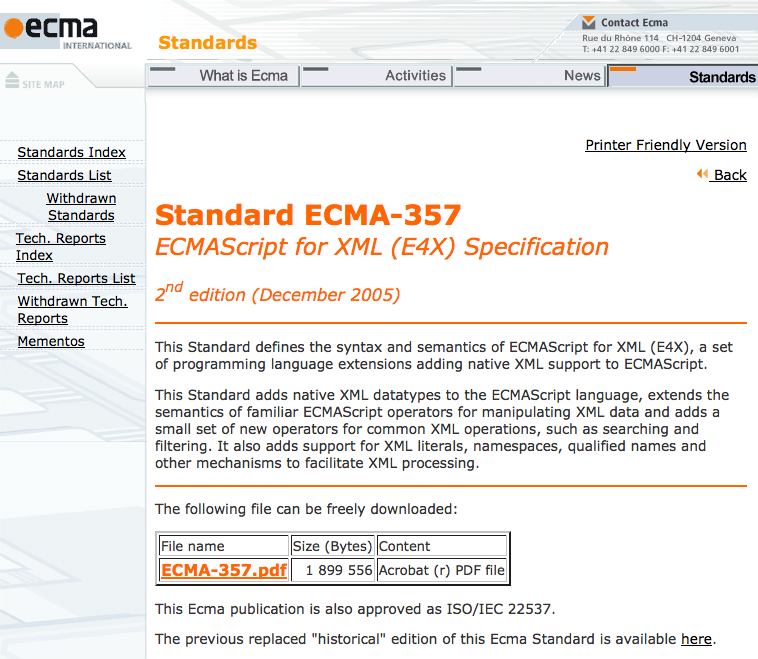

E4X 概要 - 2
- Mozilla は JavaScript 1.6 からサポート
- Mozilla独自拡張あり
- ブラウザで実装されているのはFirefoxのみ
詳しいことは、前項の仕様か、E4X in Firefox 発表資料を読もう
Firefox4以降のE4XMozilla 勉強会@東京 6th |

var x =
- hoge
- piyo
;
alert(x.item[0]); // hoge
みたいなことができる
詳しいことは、前項の仕様か、E4X in Firefox 発表資料を読もう
v8 JavaScript Engine にも Issue 235 - v8 - Support the Javascript E4X extension - V8 JavaScript Engineが立っているが...
スターの数、2位！
実装の気配なし
*を使用して子要素を全てを取ることができるvar x =; x.* /* => foo
bar
foo
bar
*/
純粋なECMAScriptではIdentfierNameに*は使えないが、E4Xではこれを拡張している
@属性名で属性値にアクセスできるvar x =; alert(x.@attr); // "foo"
これも純粋なECMAScriptではIdentfierNameに@〜は使えないが、E4Xではこれを拡張している
var o = {};
o.* = "hoge";
alert(o.*); // "hoge"
@～も通常のオブジェクトに使える
var o = {};
o.@attr = "foo";
alert(x.@attr); // "foo"
より厳密になった
var o = {};
o.* = "hoge"; // Error:
TypeError can't convert AryName to string
もちろん、以下でOK
var o = {};
o["*"] = "foo";
var o = {};
o.@attr = "foo"; // Error
TypeError can't convert AttributeName to string
もちろん、以下でOK
var o = {};
o["@attr"] = "foo";
喜ばしいことだけど
何か残念 orz